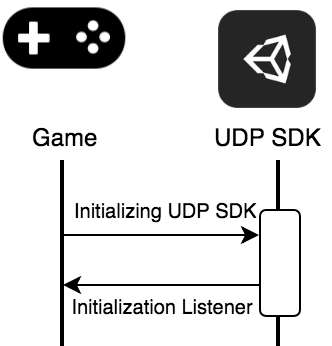

Implementing UDP IAP on the client side#
To implement UDP IAP, follow these steps:
- Configure UDP IAP
- Initialize UDP SDK
- Check the payment
- Purchase a product
- Consume a purchase
- Validate the client-side integration
Configuring UDP IAP#
Take the following steps to configure UDP IAP:
Choose
IAP Catalog(Window>Unity UDP>IAP Catalog).Input your product information and click
Create Productto sync with the server. To add more products, ClickAdd Product Draft.Note: Specify the product price, or players can’t purchase products in game stores.
Click the
GameManagerGameObject inHierarchyand enter the slugs of your products intoProduct_1andProduct_2. You can add more products using theGameManager.csfile.
Initializing UDP SDK#
To initialize UDP SDK, your game provides the Unity client ID and Unity client key to the UDP SDK. The initialization listener will let you know whether the initialization succeeds by returning a success or failure message.

Call the Initialize method with IInitCallback and AppInfo.1
StoreService.Initialize(IInitCallback, AppInfo)
Note that you don’t need to send AppInfo if you have configured the GameSetting file in the Unity Editor.
Then InitListener will notify your game whether the initialization succeeds.1
2
3
4
5
6
7
8
9
10
11
12
13
14public class InitCallback : IInitListener
{
public void OnInitialized(UserInfo userInfo)
{
Debug.Log("Initialization succeeded");
// Developers can call queryInventory here
// to see if there are purchases needed to be consumed
}
public void OnInitializeFailed(string message)
{
Debug.Log("Initialization failed: " + message);
}
}
Checking the payment#
To prevent a product being paid for but not delivered, your game needs to query the partner stores’ inventory after the initialization is completed. This allows you to, for example, restore non-consumable products when your game is reinstalled.
Your game checks whether there is an unconsumed product by calling the QueryInventory method immediately after the initialization succeeds.
In you game, you can query the item details with QueryInventort. If you specify productIds, you can get the information of your specified items. If you don’t specify productIdS, you can get the information of all items that are purchased but not consumed.
1 | PurchaseService.QueryInventory(productIds, callback); |
Implementing listeners for events that are related to the purchase service
IPurchaseListener provides the following listeners that tell you the result of all purchase-related events:
OnPurchasetells you that the purchase succeeded.OnPurchaseFailedtells you that the purchase failed.OnPurchaseRepeatedis used when a player buys a non-consumable product several times. You can implement this listener when the partner store doesn’t supportQueryInventory.OnPurchaseConsumetells you that the consumption succeeded.OnPurchaseConsumeFailedtells you that the consumption failed.OnQueryInventorytells you that the querying succeeded.OnQueryInventoryFailedtell you that the query failed.
Here is an example:
1 | public class PurchaseCallback : IPurchaseListener |
Purchasing an item#
To start a purchase request from your game, call the Purchase method and provide productId, cpOrderId, and developerPayload.productId is the product that the player wants to buy. cpOrderId is a unique order ID defined by yourself. If you provide a null for this argument, the SDK for UDP will generate a UUID automatically. developerPayload is whatever information you want to send to the SDK for UDP. The information will be returned after the purchase is completed.
Here is an example:
1 | PurchaseService.Purchase("productId", "cpOrderId", "developerPayload", PurchaseCallback); |
Consuming a purchase#
If a consumable product is purchased, it can’t be repurchased again before it has been consumed. So the consumption is used to make sure the purchased product is successfully delivered.
Note: This step is only necessary when the product is consumable.
Your game sends a Consume request to UDP SDK. We recommend that your game delivers the product after it has been consumed, or the product may be delivered repeatedly.
1 | PurchaseService.ConsumePurchase(PurchaseInfo, IPurchaseListener); |
PurchaseInfo is returned by OnPurchase.
Validating the client-side integration#
UDP performs client-side validations automatically. When partner stores return the payload and signature after a successful purchase, UDP SDK validates the signature. If the validation fails, the purchase fails accordingly.